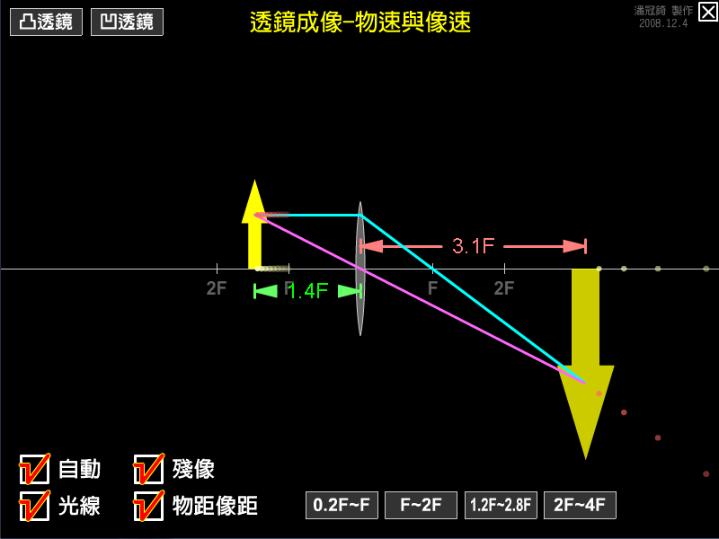

關於透鏡成像，下列敘述何者正確？
(A)凹透鏡成像時，像的速度必小於物的速度。
(B)凸透鏡成像時，像的速度必小於物的速度。
(C)凸透鏡成像時，除了物體在焦點外，物體與像的移動方向必相同。
(D)凸透鏡成像時，若物體由焦點向透鏡移動，則像必做減速運動。
(E)凹透鏡成像時，若物體遠離透鏡，則像必做加速運動。
很多學生不會這個題目，就是因為沒看這個動畫，那，就看吧。
剛剛那題的參考答案：A C D (反白看見)

↑動畫截圖。
檔案下載
[PC exe]